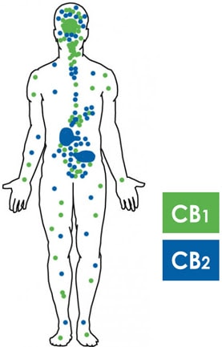

"Medycyna" – w tym przypadku, objawia się nam pod postacią wpływu CBD na nasz organizm. Gama możliwych zastosowań jest naprawdę szeroka:
CBD tonizuje układ nerwowy, resetując zapisy przy występowaniu, przykładowo – bólów fantomowych. Układ nerwowy zapamiętuje napięcia i po stresie nie odpuszcza naturalnie, dlatego stres nieodreagowany czyli nierozluźniony układ nerwowy, wciąż napina dany organ i dochodzi do mutacji komórek czyli powstaje nowotwór. Łagodzi dolegliwości bólowe: bóle stawów, bóle mięśni, bóle przewlekłe, bóle migrenowe, bóle towarzyszące chorobom nowotworowym. Związek ten ma działania lecznicze nawet w małych dawkach, oraz nie działa psychoaktywnie, dzięki czemu jest zalecany dzieciom i osobom starszym.
Wpływ na organizm ludzki:
Potwierdzone badniami naukowymi dobroczynne działanie CBD m.in. na:
Szersze informacje można znaleźć na stronie fundacji ECHO Connection.
Oficjalny serwis Echo Connection:
ECHO ConnectionCBD jest związkiem chemicznym z rodziny kannabinoidów. Nie działa psychoaktywnie, w przeciwieństwie do THC. Jeszcze jedną, ważną różnicą pomiędzy tymi dwoma związkami jest to, iż THC zawarte jest w konopii indyjskiej, a CBD w siewnej. Stężenie THC w konopiach siewnych nie przekracza 0,2 punktu procentowego, dzięki czemu jest legalne w Polsce jak i całej Unii Europejskiej. W naszym organiźmie, pod postacią rozsianych po naszym ciele receptorów, znajduje się układ endokannabinoidowy. Można go znaleźć u każdego ssaka. Odpowiada za regulacje wielu procesów istotnych dla prawidłowego funkcjonowania.
CBD odpowiada za takie mechanizmy i procesy jak:
Układ endokannabinoidowy składa się z dwóch receptorów CB1 oraz CB2:
Receptory CB1 najgęściej występuje w mózgu oraz narządach obwodowych. Do tego występują także w: wątrobie, płucach, mięśniach gładkich, układzie pokarmowym, komórkach trzustki, śródbłonku naczyń krwionośnych, narządach płciowych, układzie odpornościowym, komórkach nerwów obwodowych i nerwów współczulnych.
CB1 - receptory zaangażowane są w procesie utrzymywania homeostazy. Badania naukowe wskazują, że CB1 wpływają również na koncentracje, apetyt, pamięć i tolerancje bólu.
Receptor CB2 występuje w różnych partiach, naszego organizmu. Najgęściej występują w układzie odpornościowym. W drodze badań naukowych, dowiedziono również występowanie receptorów CB2 we włóknach nerwowych skóry i keratynocytach, komórkach kości, komórkach wątroby i komórkach wydzielania somatostatyny w trzustce, układzie nerwowym, komórkach mikrogleju i neuronów mózgu. Istnieją dowody na istnienie receptorów CB2 w ludzkich neuronach.
CB2 – tego typu receptory, wpływają na układ odpornościowy. Wyniki badań naukowych sugerują, że CB2 mogą modulować uczucie bólu i może odgrywać rolę w różnych chorobach, od wątroby, poprzez nerki, do problemów związanymi z chorobami neurodegeneracyjnymi.
CBD jest legalną substancją nie powodująca uzależnienia ani psychoaktywnych efektów ubocznych zwanych ”hajem„. Co więcej: CBD wykazuje działanie przeciwpsychotyczne, co oznacza, że działa zupełnie odwrotnie do THC i neutralizuje jego działanie.
THC jest jednym z wielu składników uzyskiwanych z części reprodukcyjnej marihuany. THC jest naturalnym związkiem o wielu właściwościach medycznych. Jego psychoaktywne właściwości sprawiły, że stał się on najbardziej rozpoznawalnym kannabinoidem, THC jest substancją występującą w marihuanie, która jest ospowiedzialna za większość efektów psychoaktywnych marihuany.
Niektóre odmiany marihuany zawierają około 20% THC, jednak jego średnie stężenie w marihuanie oscyluje w granicach 10%.
THC powoduje stan euforyczny poprzez stymulowanie komórek mózgu, które w rezultacie wyzwalają dopaminę. THC ma także wpływ na to jak mózg przetwarza nowe wspomnienia, może powodować halucynacje, złudzenia, a także może mieć wpływ na to jak myślimy. Związek chemiczny THC jest także znany z tego, iż wzmaga łaknienie. Powoduje również ogólne rozluźnienie mające wpływ na zmysł smaku, wzroku oraz słuchu, może również spowodować zmęczenie a także łagodzi symptomy agresji.
Uprawa i przetwarzanie konopi indyjskich (Cannabis Indica) jest w Polsce NIELEGALNE.
Konopie są roślinami niezwykle bogatymi w naturalne substancje aktywne
- ponad 400 różnych związków, z czego ponad 60 jest unikalnych i występuje
tylko w roślinach z rodzaju Cannabis.
CBD to jeden z bardziej fascynujących związków chemicznych, występujących
w przyrodzie. Kannabidiol (CBD) to jeden z ponad 100 występujących naturalnie
w konopiach związków organicznych zaliczanych do grupy kannabinoidów. CBD
jest najpowszechniej występującym kannabinoidem w konopiach włóknistyczh i
w przeciwieństwie do THC (tetrahydrokannabinolu) nie ma on działania psychoaktywnego
i nie jest sklasyfikowany jako substancja narkotyczna.
Naturalny kannabinoid CBD zawarty w oleju konopnym działa w sposób identyczny
do tego wytwarzanego przez ludzki organizm, czyli endokannabinoidu. Dzięki
temu w sposób łagodny i skuteczny wpływa stymulująco na funkcje naszego organizmu.
Uprawa i przetwarzanie konopi włóknistych (Cannabis Sativa) zawierające nie więcej
niż 0,20% THC jest w Polsce LEGALNE.
Oleje CBD, CBDA
Kremy, maści, szampony
Herbaty z kwiatów i liści
Mąki, kasze, nasiona, oleje
Przeznaczone do e-papierosów
Przysmaki i olejki z CBD